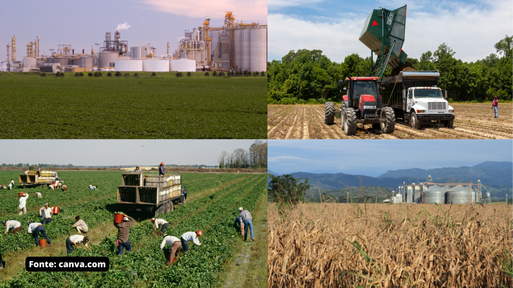

fonte: canva.com
A relação entre campo e cidade é de interdependência, onde cada um depende do outro para prosperar. O campo fornece alimentos e matérias-primas para a cidade, enquanto a cidade oferece tecnologia, mercado consumidor e serviços para o campo.
Desenvolvimento
A relação entre o campo e a cidade é essencial para o desenvolvimento social e econômico de uma região, pois garante que as necessidades de ambas as áreas sejam atendidas de forma eficiente e sustentável.
Funções do campo:
O campo é caracterizado por atividades ligadas à agricultura e pecuária, com destaque para a produção de alimentos e matérias-primas.
Funções da cidade:
- A cidade é caracterizada por uma alta densidade populacional e uma economia diversificada, com comércio, serviços, indústrias e tecnologia.